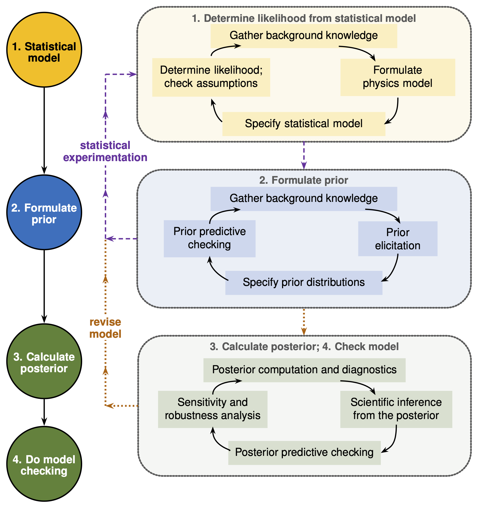

8.2. Bayesian research workflow#
The most common Bayesian analyses entail applications of Bayes’ rule:
To robustly construct the ingredients of Bayes’ rule and explore its consequences, we consider a four-step Bayesian workflow, first presented in Section 2.2 and repeated here:
Four-step Bayesian workflow in brief
Define a statistical model relating the physics model and data, including all errors and correlations.
Formulate priors.
Compute the posterior probabilities.
Do model checking.
In this chapter we elaborate on these steps. Our discussion is partially based on the more extensive exposition in the “Methods Primer” by Van De Schoot et al. [vandSchootDK+21]. (Note: discussion of how to use and calculate the evidence is postponed to Model Selection.)
These four main steps of a typical Bayesian workflow are indicated on the left in Fig. 8.7: (1) determine the likelihood function using information about the data generating process through a statistical model; (2) capture available knowledge about given parameters in a statistical model via the prior distribution (this step is conceptually performed before conditioning on data, and ideally, where practical, before those data are examined); (3) combine the prior distribution and the likelihood function using Bayes’ theorem and so obtaining the posterior distribution. The posterior distribution is then used to conduct inferences; (4) Use the posterior to check the extent to which aspects of the statistical model are consistent with the data being analyzed. While the four numbered steps provide a useful linear skeleton, the actual workflow consists of nested cycles and feedback.
In the following subsections we expand upon each step, detailing the cycles indicated on the right in Fig. 8.7.
{kind=link}

Fig. 8.7 The Bayesian research cycle. The steps needed for a research cycle using Bayesian statistics include determining the likelihood function by specifying a data-generating model and evaluating the resulting data distribution at the observed data; formalizing prior distributions based on background knowledge and prior elicitation; obtaining the posterior distribution from the product of the specified prior and likelihood function; and performing checks of the statistical model using that posterior. At each stage there is a cycle and the overall inferences that can be made can then be used to start a new research cycle. (Figure adapted from a diagram in [vandSchootDK+21] but note that the details and ordering of steps are different.)#
Step 1: Determining the likelihood#
The likelihood is common to both Bayesian and frequentist approaches, where it quantifies the degree to which observed data implies possible values for the unknown parameters. Since observed data is generated stochastically, through an underlying data-generating process, it is appropriately described by a probability distribution. This is the \(\text{``data likelihood''}\) that describes the probability distribution for observed data given a specific data-generating process (as indicated by the information on the right-hand side of the conditional).
The first step in formulating the data likelihood is to gather background knowledge and then formulate a physics model \(M(\pars)\), which relates the parameter(s) of interest to model outputs. A particular likelihood follows from a statistical model that stochastically generates the data; it incorporates the physics model, the data uncertainty \(\delta \data\), and the model discrepancy \(\delta M\). The additive statistical model from (4.11) combines these elements as random variables:
Assigning probability distributions and correlations to \(\delta \data\) and \(\delta M\) induces the data distribution \(\pdf{\data}{\thetavec,I}\). The statistical model should account for possible correlations in the outputs (type-y correlations). Such correlations result in a multivariate statistical distribution for the random variable \(\output\) that does not simply factor into a product of independent, univariate ones for each datum.
In the data likelihood distribution the unknown parameters are considered to be given; the likelihood is the conditional probability distribution \(\pdf{\output}{\para}\) of the data (\(\output\)), given fixed parameters (\(\para\)). This distribution is normalized, i.e., its integral over \(y\) is equal to one. One can consider two views on the likelihood:
Generative view: Assuming specified values of \(\pars\), what possible data would the statistical model generate, and with what probabilities?
Likelihood view: Focusing on the observed data \(\data_\mathrm{obs}\) that we have; how does the likelihood for this data set depend on the values of the model parameters?
The first view is used for prior and posterior predictive simulation. The second view is the one that we adopt when allowing model parameters to be associated with probability distributions in Bayesian inference. The likelihood still describes the probability for observing a set of data, but we emphasize its parameter dependence by defining the likelihood function
Note that the likelihood function \(\mathcal{L}(\pars)\) is not a probability distribution for model parameters (and is not normalized, i.e., its integral over \(\pars\) is not equal to one). The parameter posterior regains status as a probability density for \(\pars\) through Bayes’ rule since the likelihood is multiplied with the prior \(\pdf{\pars}{I}\) and normalized by the evidence \(\pdf{\data}{I}\).
In some cases, specifying a likelihood function can be very straightforward. A product of normal distributions, one for each output, is a standard choice. However, this assumes that the data generating process for one output is conditionally independent from the data generating process for any other output. In practice there may be correlations between them, e.g., shared analysis tools, electrical noise that is correlated between detectors, etc. Researchers often naively choose the standard data-generating model out of habit or because they cannot easily change it in the software. The statistical data-generating model is itself a modeling choice–just as much as the prior or the physics model themselves are modeling choices. It therefore needs to be justified and clearly documented, so that the choice made, and the reasons for that choice, are available to the reader. Robustness checks should be performed on the selected likelihood function to verify its influence on the posterior estimates. If these checks fail, the background knowledge should be reconsidered and the likelihood cycle revisited.
Step 2: Formulating a prior#
The second major step in the Bayesian workflow depicted in Fig. 8.7 is to determine prior distributions, shortened to priors. This is an important part of a rigorous inference process. Prior selection and the first step of likelihood determination are sometimes collectively referred to as the statistical experimentation phase. As part of the step 2 cycle, the suitability of the chosen priors can be ascertained using a prior predictive checking process (see Remark 8.1). Ultimately the sensitivity of the results to details of the chosen prior should be assessed as part of the model checking phase of the Bayesian workflow.
Prior elicitation#
Prior elicitation is the process by which a suitable prior distribution is constructed. One strategy for prior elicitation is to ask (either implicitly or explicitly) an expert or a panel of experts to suggest values for the hyperparameters of the prior distribution.
Prior elicitation can also involve implementing data-based priors. Then, the hyperparameters for the prior are derived from sample data using methods such as maximum likelihood. Such approaches, however, must avoid “double-dipping”: the data used to form the prior must be distinct from the data included in the likelihood.
The subjectivity of priors is highlighted by critics as a potential drawback of Bayesian methods. Two distinct points should be mentioned in this context. First, many elements of the estimation process are subjective in the sense that they may differ from modeler to modeler. Different reasonable people may make different reasonable choices not only for priors, but also for the likelihood, and certainly for the model itself. To lay blame for the “sin” of subjectivity solely at the feet of the priors is a misleading distraction from the other elements in the process that are inherently modeler dependent. Second, there are circumstances in which informative priors are a well-justified and principled choice, for example if a parameter is known to be positive or constrained by physics (e.g., causality), or if previous data already constrains it well (e.g., the prior is taken to be the posterior from previous data).
This illustrates that priors should encode background knowledge that the practitioner possesses which is independent of the data whose generation is modeled through the likelihood. The strength, or, conversely, uncertainty of that knowledge should be incorporated in the informativeness of the prior.
Sometimes, diffuse priors are assigned to reflect an indifference to the location or scale of some parameter. Symmetry arguments can then be used to assign a prior that reflects this indifference via a symmetry or invariance principle. See Section 11.1 for more on this topic and specific examples.
Specify prior distributions#
Priors can come in many different distributional forms, such as a normal, uniform or Poisson distribution, etc. Most importantly, priors can have different levels of informativeness. The information reflected in a prior distribution can be anywhere on a continuum from complete uncertainty to relative certainty. Although priors can fall anywhere along this continuum, there are three main classifications of priors that are used in the literature to categorize the degree of (un)certainty they encode: informative, weakly informative and diffuse. The informativeness of a prior should be assessed relative to physically meaningful parameter scales and, ultimately, through the implications of the prior for observable quantities. It is also useful to compare the scale of the prior with the scale over which the likelihood can constrain the parameter. Good practical advice on choosing priors can be found in the Stan Prior Choice Recommendations compendium on github.
Even with quantified prior information, the choice of distributional form for the prior (as needed for a full Bayesian analysis) typically involves extra assumptions. Say that you wish to assign to a model parameter a prior with a specific mean value and standard deviation. In this scenario you are still left with the choice between many different distributional forms that fulfill those constraints. Fortunately, arguments based on the maximum entropy principle can help translate a finite set of pieces of prior information into a probability distribution such that as little additional information as possible is smuggled into the prior. These ideas are presented in Section 11.2 The principle of maximum entropy.
Finally, there is the question of how to formulate a prior in a multi-dimensional parameter space. For convenience, priors are often formulated for each parameter separately and then combined assuming independence, i.e., the prior \(\pdf{\para}{I}\) is taken to be the product of the one-dimensional prior pdfs for each individual parameter. However, if previous data or a theoretical argument indicates that two parameters should be correlated, then that correlation should be incorporated into the prior. Note that correlations derived from the data set being analyzed should not be incorporated into the prior. These will emerge from the posterior when it is formed from the prior and the likelihood. Building them into the prior right from the start of the analysis would be an example of the “double dipping” warned about above.
Checking prior implications#
One should always check prior implications to ensure that the prior is not much more restrictive (or much broader) than the background knowledge that is used to motivate it. This starts with checking that the scales of parameters (which may be physical observables) are consistent with what is known. Because Bayesian inference can be sensitive to poorly chosen priors, it is important to check whether the specified prior produces reasonable (not implausible) values for output quantities as well. Even in advance of formulating the data generating distribution from a statistical model, one can draw samples from the prior \(\pdf{\thetavec}{I}\) and evaluate the physics model \(M(\thetavec)\) alone, looking whether substantial probability is placed on physically impossible or strongly implausible outputs.
A more definitive assessment of the prior choice is through prior predictive checking (see Remark 8.1 below). The prior predictive distribution is the distribution of all possible data that could be generated given the prior, the statistical model for the data-generating process, and the physics model that relates the parameters of the model to the outputs. Thus, in the workflow diagram in Fig. 8.7, it comes at the end of the step 2 cycle, before confronting new data. A prior predictive check assesses whether the combination of these ingredients generates outcomes that are compatible with background knowledge and with the range of data that could reasonably have been anticipated before the data being analyzed are used. The prior predictive distribution will often be broad, since it reflects uncertainty before conditioning on the new data, but it should not place substantial probability on outcomes that are already known to be physically impossible or scientifically implausible. Such behavior signals that one or more ingredients of the analysis—the prior, the physics model, or the assumed statistical relation between model outputs and data—should be reconsidered (indicated by the return line to Step 1 in Fig. 8.7). We emphasize that the check being conducted here is against output values that are clearly “out of range”, e.g., are significantly different than the expected size of the data. A prior predictive check absolutely does not mean that the practitioner should adjust the prior until its predictions agree with the particular data set that will subsequently enter the likelihood.
Step 3: Results for the posterior–and other things of interest#
In the Bayesian Research Workflow, once the statistical model has been defined and the associated likelihood function derived, the next step is to combine the likelihood with the prior and use the resulting posterior to estimate the unknown parameters of the model.
In contrast, the frequentist framework as typically applied for model fitting focuses on the expected long-term outcomes of an experiment with the intent of producing a single point estimate for model parameters such as the maximum likelihood estimate and associated confidence interval. Within the Bayesian Research Workflow, probability distributions are assigned to the model parameters. Remember: in Bayesian statistics, the focus is on estimating the entire posterior distribution of the model parameters, even if this distribution is ultimately summarized with associated point estimates, such as the posterior mean or median, and a credible interval.
In these lecture notes, we frequently use Markov Chain Monte Carlo (MCMC) for posterior inference, see Overview of Part III: Sampling—although more advanced sampling algorithms are also discussed, see Section 22. MCMC combines two concepts: obtaining a set of parameter values from the posterior distribution using the Markov chain; and obtaining a distributional estimate of the posterior and associated statistics using Monte Carlo integration. A workflow for MCMC sampling is detailed in Section 21.1. We emphasize that posterior computation is not complete until the sampling quality and robustness has been checked with appropriate diagnostics (see Section 21.2).
MCMC is able to indirectly compute inferences on the posterior distribution by simulating different sets of parameters according to the product of the prior probability and the likelihood. This results in sets of values for the parameters \(\para\) (vectors in the multi-dimensional setting) that are obtained from the posterior distribution with frequencies that will correspond to the posterior distribution if the MCMC has converged. This can be achieved despite the fact that a Bayesian posterior obtained from a likelihood and a prior will typically be high-dimensional, not have a closed analytic form, and only be known up to a constant of proportionality. The samples of values of the parameters are then used to obtain empirical estimates of the posterior distribution of interest. It is often more difficult to obtain converged estimates of multivariate distributions, or of the form of low-probability tails. It is therefore sometimes more useful to focus on the marginal posterior distribution of each parameter, or pairs of parameters. These marginal distributions are defined by integrating out all but one or two of the parameters from the multi-dimensional posterior.
One important payoff of MCMC sampling is that any quantity of interest that is a function of the model parameters can also be obtained by computing the function over the set of MCMC samples. This then generates a set of samples for that quantity which can be analyzed via summary statistics, histograms, etc. If we are interested in multiple quantities that are functions of the parameters we can represent their multi-dimensional distribution as samples in this sense, and so determine not just summary statistics for each one, but also the correlations between these derived quantities.
Step 4: Model checking#
Because the statistical model specifies a probability distribution for possible data conditional on the parameters, posterior draws of the parameters can be propagated through the data-generating model to generate replicated or future data through the predictive posterior distribution (PPD). The PPD is the distribution that the model predicts for the model outputs that were measured, given the posterior inferred from those data. The PPD is our first example of Step 4 in the Bayesian Research Workflow.
Another important check is to assess prior sensitivity. In general a Bayesian analysis should be re-run several times, with different, reasonable, prior choices in order to assess how, and if so, where, the posterior is affected by those choices.
Remark 8.1 (Prior and posterior predictive checking)
Prior and posterior predictive checks are two cases of the general concept of predictive checks, just conditioning on different things (no data and the observed data, respectively). They appear in the diagram Fig. 8.7 between Steps 2 and 3 and as part of Step 4.
Posterior predictive checking works by simulating new replicated data sets based on the fitted model parameters and then comparing statistics applied to the replicated data set with the same statistic applied to the original data set. Formally, the posterior predictive distribution is given by:
where the first pdf under the integral is defined by the statistical model that relates the future data \(y\) to \(M(\pars)\), i.e., (4.11).
The prior predictive distribution is just like the posterior predictive distribution with no observed data, so that a prior predictive check is nothing more than the limiting case of a posterior predictive check with no data. I.e., this distribution is just:
Therefore, prior and posterior predictive checks will use closely related simulation procedures, but they involve checking against different things and they answer different questions. Prior predictive checking examines the implications of the prior together with the generative model without any conditioning on (and really without any looking at) the new data. Posterior predictive checking asks whether the fitted model can reproduce scientifically relevant features of the observed data.
A standard posterior predictive check would plot a histogram of each replicated data set along with the original data set and compare them by eye. If a model captures the data well, summary statistics such as sample mean and standard deviation should have similar values in the original and replicated data sets.
Somewhat analogously, prior predictive checks evaluate what data sets would be consistent with the prior. The difference is that data sets simulated from the prior should not be compared to the actual data \(D\), but if the simulated outputs take on extreme values that will help diagnose priors that are too strong, too weak, poorly shaped, or poorly located.
A prior predictive check is easy to carry out mechanically by sampling the parameter \(\para\) (or sampling the parameter vector) from the prior, then generating data according to the data model given the sampled parameters. This allows a check of how the probability mass of prior predictions is distributed. The posterior predictive distribution can be negatively affected by the prior when there is not much observed data and substantial prior mass is concentrated around infeasible values.
Prior predictive checks may motivate revisions of the prior or the generative model, leading back to an earlier step in the workflow, as indicated by the dashed return line in Fig. 8.7. Posterior predictive checks primarily diagnose deficiencies in the fitted model and may motivate revised model assumptions (dotted return line). They can also reveal sensitivity to the prior, but prior revisions after examining the data should be reported as part of a sensitivity analysis or become part of a subsequent research cycle.
The sensitivity of the posterior to the inclusion of different outputs in the likelihood is reflective of the information content of that observable. Sensitivity studies of the posterior based on simulated outputs for different future data is a branch of statistical inference known as experimental design. It can help determine which observable(s) to spend resources on measuring to improve the accuracy and precision of a desired inference.
Reproducibility#
Not reporting the choice of priors is problematic for any Bayesian paper. There are many dangers in naively using priors. Practitioners should record what was done and justify it as part of the research output. Specifying priors is a way of declaring to future readers of your work what information you considered known before you began your data analysis.
For the same reason, likelihood specification should be clear, as already discussed above.
More generally, proper reporting on statistics, including sharing of data and scripts, is a crucial element in the verification and reproducibility of research. A workflow incorporating good research practices should encourage reproducibility. Allowing others to assess the statistical methods and underlying data used in a study through transparent reporting and code & data sharing helps with interpreting the study results, generalizing to other cases, assessing the suitability of modeling choices, and the detection & correction of errors. Reporting practices are not yet consistent in this regard across fields or even journals in individual fields.
To enable reproducibility and allow others to run Bayesian statistics on the same data with different parametrizations, priors, model assumptions, or likelihoods, it is important that the underlying data and code used are properly documented and shared following the FAIR principles: findability, accessibility, interoperability and reusability. Preferably, data and code should be shared in a trusted repository (Registry of Research Data Repositories) with their own persistent identifier (such as a DOI), and tagged with metadata describing the data set or codebase. This also allows the data set and the code to be recognized as separate research outputs; others can then cite them accordingly. Repositories can be general, such as Zenodo or github; language-specific, such as PyPI for Python code; or domain-specific. Many scientific journals adhere to transparency and openness promotion guidelines, which specify requirements for code and data sharing.
Open-source software should be used as much as possible, as open sources reduce the monetary and accessibility threshold to replicating scientific results. Moreover, it can be argued that closed-source software keeps part of the academic process hidden, including from the researchers who use the software themselves. It is worth emphasizing that open-source software is only truly accessible with proper documentation, which includes listing dependencies and configuration instructions in Readme files, commenting on code to explain functionality and including comprehensive documentation for any packages released as part of the research process.
Checklists#
We end this chapter with two different recommended checklists for statistically sound Bayesian inference that incorporate many of the points made in this chapter. The first one (see Remark 8.2) has mainly natural science applications in mind.
Remark 8.2 (Checklist for statistically sound Bayesian inference)
Interact with the experts (i.e., statisticians, applied mathematicians).
Identify all sources of experimental and theoretical uncertainties in this process.
Formulate statistical models for those uncertainties.
Account for correlations in observables (type y) when formulating the likelihood.
Choose priors that are as informative as you consider reasonable, consistent with background knowledge; check their implications and assess sensitivity to reasonable alternatives.
Use model checking to assess the adequacy of the analysis and identify possible model deficiencies.
Note that this first checklist matches up quite well with the Bayesian workflow given at the start of this section.
The second checklist, labeled WAMBS (when to Worry and how to Avoid the Misuse of Bayesian Statistics), originates in work by statistics experts from a wide range of application areas [vandSchootDK+21]. Here we have condensed the recommendations of the original WAMBS checklist in regard to monitoring the MCMC convergence since we will provide more details on this in Part III.
Remark 8.3 (An adapted version of the WAMBS checklist)
Here we have adapted the WAMBS-v2 checklist, an updated version of the WAMBS (when to Worry and how to Avoid the Misuse of Bayesian Statistics) checklist. Reproduced from [vandSchootDK+21].
Ensure the prior distributions and the model or likelihood are well understood (see checklist above).
Describe them thoroughly in your research output (article, analysis notebook, etc.).
Use prior predictive checking to assess whether the prior and generative model imply scientifically plausible data.
Check convergence of your MCMC chain. (See MCMC Workflow section.)
To assess the impact of informative priors, compare the posterior results with an analysis using diffuse priors. This comparison can facilitate a deeper understanding of the impact the informative priors have on findings.
Examine the sensitivity of your results to priors, especially multivariate priors. These priors can be particularly influential on the posterior, even with slight modifications to the hyperparameters.
It may also be worth testing different forms for the likelihood, in order to see what impact they have on the final results.
Report findings, including Bayesian interpretations. Take advantage of explaining and capturing the entire posterior rather than simply using point estimates. It may be helpful to examine the density at different quantiles to fully capture and understand the posterior distribution.
Ticking all the boxes of checklists such as these can be considered an aspirational goal for performing a truly rigorous statistical inference in science.